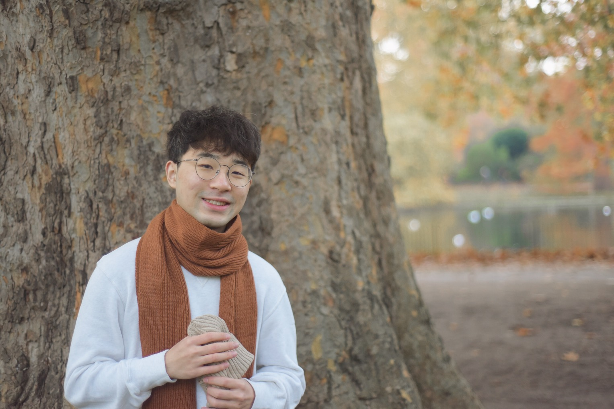

Hailang Jiang, a future (theoretical & experimental) phonologist.
CV: here; Email: hailang.jiang.22@ucl.ac.uk

Currently I am a master student in the Dept of Linguistics at UCL.
My degree dissertation is Learning Diphthongs and Complex Vowels [draft], supervised by Dr James White.
I intend to pursue a PhD degree in Linguistics in the States, starting Fall 2024.
This summer I am going to attend the LSA Summer Institute at UMass, Amherst.
Education
My research interests
Here are my latest studies: